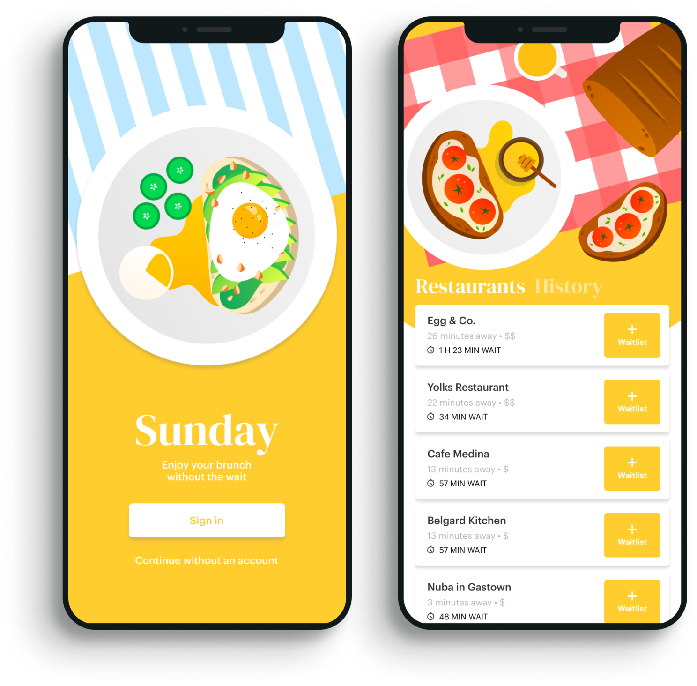
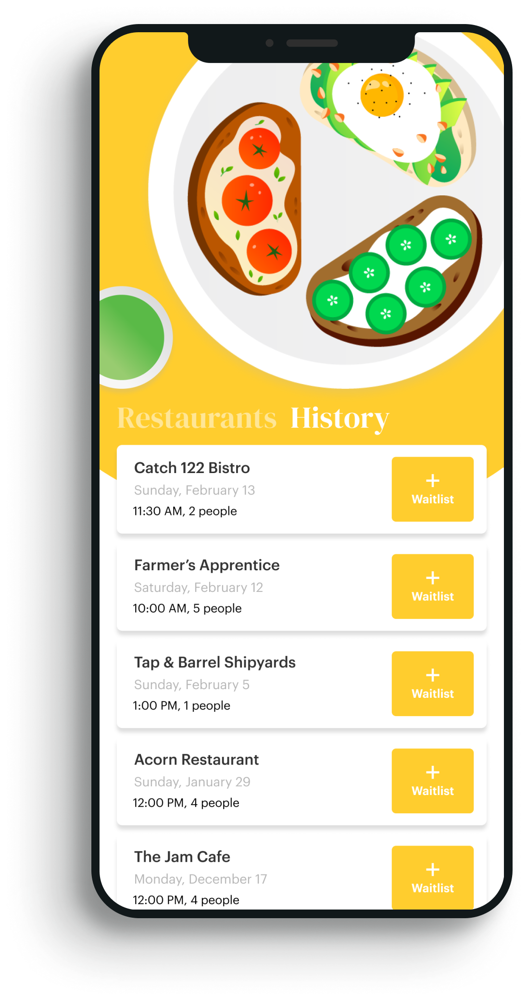
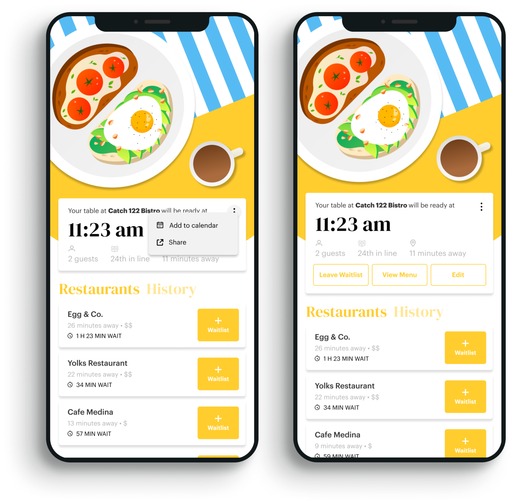
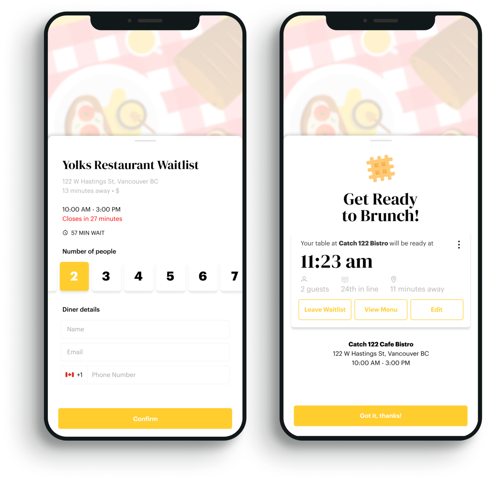
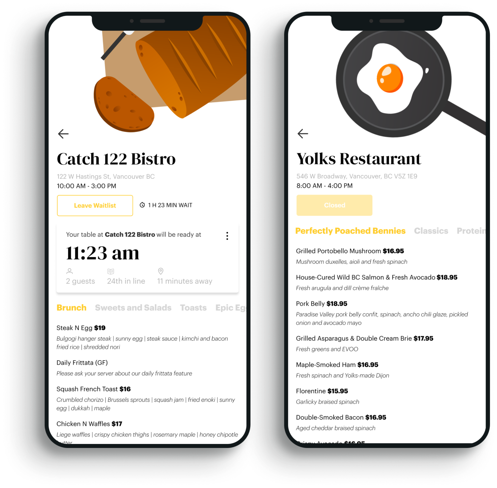
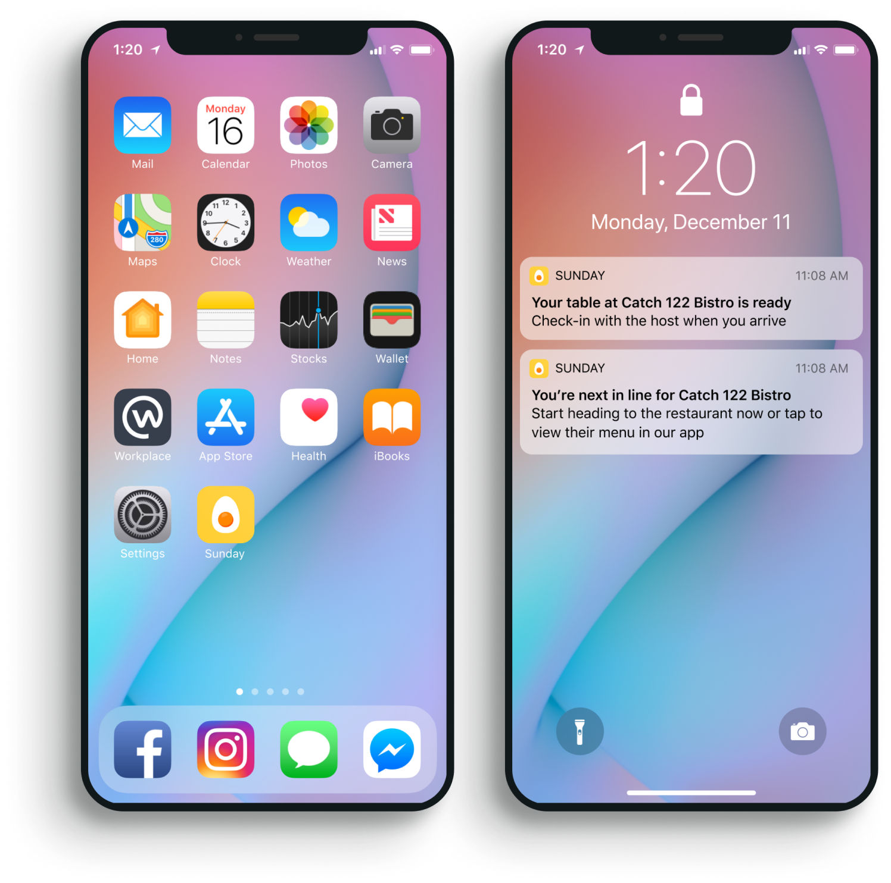

Home Screen
When all 3 user stories from the architecture diagram open the app, they’re greeted with a list of nearby brunch restaurants.
At the top of the screen there's a food illustration, with tabs “Restaurant” and “History”. I wanted to keep the functionality simple and omitted further navigation.
From here, we can navigate to our history, view the restaurant’s menu by tapping on the card or join their waitlist.
Restaurant History
We also offer an option for users to view the history with the app - that is, the list of restaurants they’ve been on waitlists on previously.
The difference in information on the cards from the main screen is this shows the party size and date+time of their waitlist.
The option to join that restaurant’s waitlist persists.
A future iteration would be a “Favourites” section for frequent brunch goers to curate a list of their preferred brunch spots in addition to history.


Waitlist Status Card
If the user is already on a waitlist, we assume the moment they enter our app - they want to see how much longer until their table is ready.
We placed a different card style at the top of the list of their waitlist status with all the relevant information they need, since it is a time-sensitive activity.
Within the card they can edit their reservation, view the restaurant’s menu, leave the waitlist, add it to their calendar, or share it with friends.
Add to Waitlist and Confirmation
Once the user finds a brunch restaurant, this modal slides up on the same screen, blurring out the background, prompting the information we’ll need to add them to the waitlist.
Restaurant information such as the address, distance from the user, and hours are present at the top. They submit details like the number of people and email to confirm their position on the waitlist.


Menus
As an added bonus, our app also displays the menus of the brunch restaurants, accessible via the home screen on each restaurant’s card. The option to join or leave the restaurant's waitlist is also included.
Notifications
As a finishing touch, I also envisioned the types of notifications that would be associated with this app to keep users updated on the status of their spot in the waitlist.
